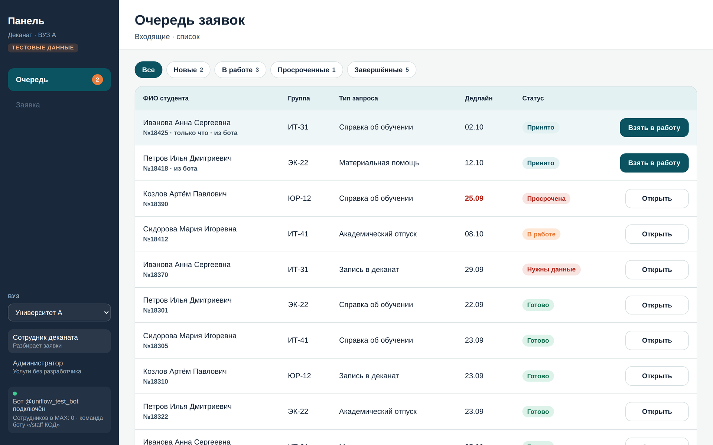
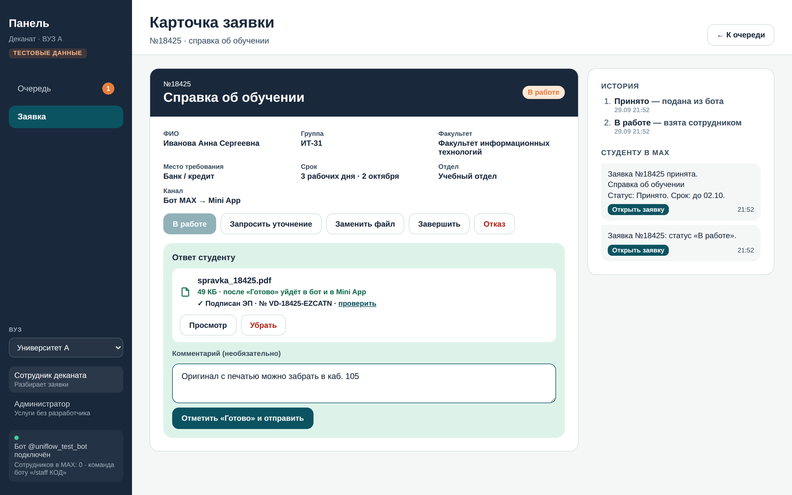

Данные для проверки сервиса «Ведома»
| Чат-бот в MAX | «Хакатон 302», ник @t302_hakaton_bot |
| Mini App | https://uniflow.betatestbyfridrix.ru/miniapp.html |
| Панель вуза | https://uniflow.betatestbyfridrix.ru/ пароль: |
| Собственный API | https://uniflow.betatestbyfridrix.ru openapi.yaml (OpenAPI 3.1) · DATA-API.yaml — 18 проверок проходят на боевом адресе |
| Репозиторий | commit · тег |
Тестовые доступы
- Студент в MAX: кнопка «Демо-вход: тестовый студент» в боте
- Студент в Mini App: a.ivanova@student.univ-a.ru, любой пароль от 4 символов
- Сотрудник в MAX (уведомления): боту /staff
Переменные для запуска в Docker
JEV_API_KEY=
JEV_API_URL=https://polza.ai/api/v1/systemone
JEV_MODEL=typesafe/jev
остальное — в .env.example
запуск: docker compose up -d --build
Ведома
Справка из вуза — за один диалог в MAX. Без визитов в деканат.
«Пантеры»
Студент пишет боту своими словами — и получает подписанную справку в чат
Справку заказывают по почте, в кабинетах и окнах
У каждого вуза свой порядок. До 3 рабочих дней без статуса, за бумагой — лично.
Бот MAX с ИИ + Mini App + панель вуза
ИИ понимает запрос и уточняет кнопками, форма заполнена сама, сотрудник выдаёт справку в один клик.
0 визитов, 1 канал, статус приходит сам
PDF с электронной подписью и QR-кодом можно сразу переслать в банк или МФЦ.
Приоритетный сегмент — студент очной формы, которому нужна типовая справка
Нужна справка «я студент» — срочно и не в часы приёма
Почему начинаем с него: запрос частый, форма стандартная, результат понятен — документ. Эффект виден уже в первом семестре.
Сотрудник деканата
Разбирает заявки, выдаёт документы, отвечает на вопросы о статусе
Администратор вуза
Отвечает за услуги, сроки и качество сервиса
Чтобы получить одну справку, студент проходит 4 шага и 2 визита
Найти, где заказать
Сайт, почта, личный кабинет или окно — у каждого вуза свой порядок. В СПбПУ у 11 институтов свои адреса почты[7]
Подать запрос
Письмо, бланк или очередь. Окно выдачи может работать, например, пн–чт с 13:30 до 17:15[7]
Ждать без статуса
Типичный срок — до 3 рабочих дней[7–9]. Где справка — неизвестно, остаётся писать и звонить.
Забрать бумагу
Второй визит за оригиналом. Потерял — заказывай снова (в РАНХиГС дубликаты платные с 2026 г.[9])
- Открывают «единые деканаты», чтобы студент не ходил по кабинетам — РХТУ[10]
- Строят студенческие офисы «одного окна» — РАНХиГС[9]
- Переходят на электронные справки с ЭП — ВШЭ, с 2023 г.[8]
Студенты и вузы уже общаются в MAX — услуге не нужно отдельное приложение
В приёмной кампании 2026 года первокурсники получают приглашение в учебный чат вуза в MAX прямо через Госуслуги[6]
- Не нужно устанавливать приложение, придумывать логин и пароль
- Студента узнаём по подписи MAX: вход в Mini App без пароля
- Статусы и документ приходят туда, где студент и так читает сообщения
Ведома — единое окно студенческих услуг внутри MAX
Бот с ИИ
- Понимает запрос своими словами
- Уточняет недостающее кнопками
- Присылает статусы и готовый PDF
- Отвечает «где моя справка?»
Mini App
- Форма уже заполнена ботом и данными вуза
- Каталог услуг, мои заявки, история статусов
- Документы с отметкой о подписи
- Оценка услуги в два касания
Веб-панель
- Одна очередь со сроками и просрочками
- Справка по шаблону с ЭП — в один клик
- Оценки и узкие места на дашборде
- Новые услуги — без разработчика
От сообщения до справки — без визитов и писем
Куда нужна справка?
Место требования: Банк / кредит
Обычно до 3 рабочих дней.


Срок: до 02.10.

Студент не знает, как называется услуга. ИИ понимает, что ему нужно
| Студент пишет | Что понял ИИ | Без ИИ |
|---|---|---|
| «Надо подтвердить, что я учусь, для визы» | Справка об обучении место: «Посольство / виза» | не понял |
| «Не хватает денег на еду, в семье пятеро детей» | Материальная помощь основание: «Многодетная семья» | не понял |
| «Заболел, хочу взять паузу в учёбе» | Академический отпуск основание: «По медицинским показаниям» | без основания |
| «Хочу к декану» | Запись в деканат время уточнит кнопками | не понял |
| «Какая погода завтра» | Не про услуги вуза подскажет, с чем может помочь | понял |
Один запрос к ИИ — и бот знает, что сделать дальше
Не выдумывает
Jev не пишет текст — он выбирает из вариантов. Бот не пообещает несуществующую услугу или срок: ответы готовит вуз.
Учится без разработчика
Варианты берутся из конструктора услуг. Добавили услугу в панели — ИИ сразу её узнаёт.
Не принимает решений
ИИ только заполняет черновик. Студент подтверждает, сотрудник выдаёт. Если ИИ недоступен — бот работает по ключевым словам.
Справка приходит PDF с электронной подписью и проверяется по QR-коду


Все заявки в одной очереди, ответ уходит студенту сам
Справка об обучении · Иванова А. · ИТ-31


Вуз видит узкие места и меняет услуги сам

Обратная связь → решения
Оценки 1–5 и комментарии студентов по каждой услуге: средний срок, доля уточнений и просрочек, готовые подсказки, что поправить в процессе

Новая услуга без разработчика
Поля формы, срок, отдел, тип результата и фразы для ИИ. «Опубликовать» — и услуга сразу в Mini App и в ответах бота
Один сервер вуза связывает MAX, ИИ и панель
Каждый видит только своё, наружу уходит минимум
| Данные | Где | Кто видит |
|---|---|---|
| Профиль студента ФИО, группа, факультет | сервер вуза | сам студент; сотрудники своего вуза |
| Заявки, ответы, оценки | сервер вуза | студент — только свои; сотрудники своего вуза |
| Справки и файлы | сервер вуза, ссылка со случайным ID | владелец заявки и сотрудники |
| ID пользователя MAX | сервер вуза | только сервер — для отправки сообщений |
| Текст сообщения боту | Jev (Polza.AI) | только текст — без ФИО и ID |
| Проверка справки | публичная страница | фамилия и инициалы, номер, кем подписана |
Защита
- Вход в Mini App — по подписи MAX (initData), без пароля
- Токены и ключи — только в .env, не в коде
- Версии библиотек зафиксированы
- Подделанную сессию сервер отклоняет (401)
- Вход через систему вуза (SSO) и база студентов — тестовые
- Интеграции с 1С и личным кабинетом вуза — нет
- Подпись справок — демо-ключ, не УКЭП
Что меняется для студента и деканата
| Сейчас | С «Ведомой» | |
|---|---|---|
| Каналы | почта, сайт, кабинет, окно[7–9] | один — чат в MAX |
| Визиты | до двух: подать и забрать | ноль — PDF с ЭП в чат |
| Действия | найти порядок, написать письмо или бланк | 1 сообщение, 1–2 кнопки, «Отправить» |
| Статус | узнавать самому | приходит на каждом шаге |
| Срок | до 3 рабочих дней, не виден[7–9] | тот же регламент, но виден и под контролем |
| Сотрудник | набирает справку, отвечает «где?» | шаблон в 1 клик, ответы уходят сами |
Всё считается из данных системы: время, канал, оценки, просрочки
Та же механика работает везде, где выдают документы по запросу
Другие вузы
Несколько вузов на одном сервере — уже в MVP: свои услуги, сотрудники и данные
Колледжи СПО
Те же справки: военкомат, соцзащита, работа родителей
Школы
Справки об обучении для родителей — через бот родителя
Справки сотрудникам
С места работы, о доходах, пропуска — «единое окно» внутри компании гипотеза
Не меняется
- Бот с ИИ, Mini App, панель, подпись и проверка документов
- Каталог и формы собираются в конструкторе, ИИ учится на нём сам
Адаптируем
- Данные: список студентов и услуг, шаблоны документов организации
- Интеграции: вход через систему вуза, 1С / личный кабинет, УКЭП
- Продукт: роль родителя для школ, база данных вместо файла
От одного факультета — к вузам региона и колледжам
1 факультет, 3 услуги: справка, запись в деканат, матпомощь
Выгрузка студентов, шаблон справки вуза, куратор в деканате, 1 сервер
Все типовые услуги через конструктор, все факультеты
Вход через систему вуза, связь с 1С / ЛК, УКЭП вуза, база данных
Облачная версия для нескольких вузов региона
Договор оператора ПДн, хранение в РФ, поддержка и обучение сотрудников
Колледжи и школы региона на той же платформе
Шаблоны документов, роль родителя, строже доступ к данным детей
Что может помешать — и как мы это снимаем
| Риск | Как снижаем |
|---|---|
| Персональные данные | 152-ФЗ: согласие, хранение в РФ, вуз — оператор данных; в ИИ уходит только текст |
| Юридическая сила справки | Демо-подпись меняется на УКЭП вуза, проверка по QR остаётся |
| ИИ ошибся | Уточнения кнопками, «Это другая услуга», студент видит форму перед отправкой |
| ИИ или внешний API недоступен | Бот переходит на ключевые слова и продолжает работать |
| Деканат не примет инструмент | Меньше ручной работы: шаблон в 1 клик, ответы уходят сами, аналитика |
- Хранилище — файл на одном сервере
- Mini App открывается из MAX после регистрации адреса в кабинете бота
- Статусы в Mini App обновляются раз в 4 секунды
- Банки и ведомства принимают справку с УКЭП вуза
- Большая часть обращений — типовые справки
- Вуз готов выгрузить список студентов для входа
Использованные источники
- Минобрнауки России — 4,66 млн студентов вузов, 1,42 млн первокурсников в 2025 г. Интерфакс, 30.06.2026. interfax.ru/russia/1099194
- ИСИЭЗ НИУ ВШЭ «Образование в цифрах: 2025» — доля очной формы 62%. issek.hse.ru/news/1080237504.html
- Минобрнауки России — 751 вуз на январь 2026 г. По данным edu.sravni.ru
- Минпросвещения России, 2026 — 3,2 тыс. колледжей и ≈4 млн студентов, 38 тыс. школ и 18 млн школьников. По материалам кейса трека «Образовательные решения»
- RB.ru — MAX: 107 млн пользователей, 77 млн в день, 26.03.2026
- iPhones.ru — 230 тыс. студенческих чатов и 2,4 млн участников, 5 тыс. каналов вузов в MAX, приглашения через Госуслуги, 30.07.2026
- СПбПУ — «Заявления и справки студентам»: 11 институтов с отдельными адресами, часы приёма, до 3 рабочих дней. spbstu.ru/students/enquiry
- НИУ ВШЭ — заказ справок до 3 дней; электронная справка с ЭП с 14.03.2023. hse.ru, studentcentre.hse.ru
- РАНХиГС — Студенческий офис: до 3 рабочих дней, платные бумажные дубликаты с 01.03.2026. ranepa.ru/mfc
- РХТУ им. Менделеева — «Все справки в одном месте: Единый деканат», 2021. muctr.ru
- Т—Ж — «Справка об обучении в вузе 2026»: для чего нужна справка. t-j.ru/spravka-dly-vuza
- TypeSafe AI, Polza.AI — документация Jev: docs.typesafe.ai, polza.ai/docs/gaidy/jev
- Минтранс России — «Университеты переходят в MAX», 05.02.2026. mintrans.gov.ru